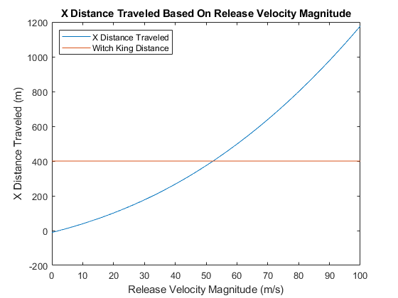
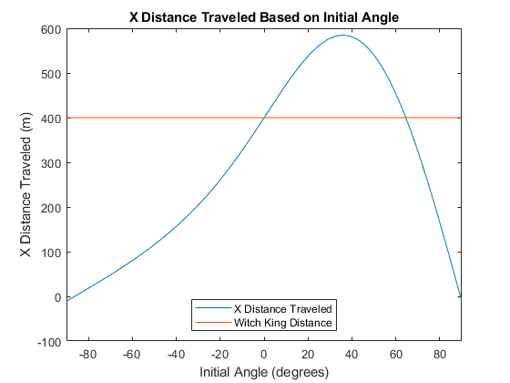
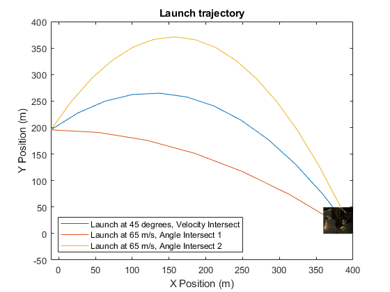

Contents
Programming Assignment: Trajectory Calculations
Robert Kobrin rlkobrin@ncsu.edu 9/3/2021 PA2.m
clear
clc
close all
Declarations
iVelocity = [0:0.001:100]; %Initial velocity range of rock release (m/s) iVelSet = 65; %Initial velocity of rock release (m/s) iAngle = 45; %Initial angle of rock release (degrees) iAngleSet = [-90:0.001:90]; %Initial angle range of rock release (degrees) iX = 0; %Initial x value of the projectile (m) iY = 200; %Initial y value of the projectile (m) time = [0:25]; %Time range of the projectile's flight (seconds) targetDistance = 400; % Horizontal distance from the base of the trebuchet to the Witch King (m) iVelocityIntersect = 51.14685; %Initial velocity value that causes intersect with target distance of 400m (m/s) iAngleIntersect1 = -2.00744; %First angle value that causes intersect with target distance of 400m (degrees) iAngleIntersect2 = 65.44239; %Second angle value that causes intersect with target distance of 400m (degrees) toleranceVelocity = 0.01; %Tolerance value for the difference between the x distance traveled and the target distance for variable velocity (m) toleranceAngle =0.01; %Tolerance value for the difference between the x distance traveled and the target distance for variable angle (m) %Bonus Part 3 Declarations imgX=targetDistance; %X value of the image (meters) imgY=0; %Y value of the image (meters) imgWidth=0.1; %Width adjustment value for the image (unitless) imgLength=0.1; %Width adjustment value for the image (unitless) wkImage = imread('WitchKing.png'); imgResize = imresize(wkImage,[50 50]); finalHit = 0; %Y value for image placement (meters) %Bonus Part 2 Declarations HillHeight = 180; %Height of the hill (m) TrebuchetHeight1 = 5; %Height of the trebuchet below pivot point (m) trebArmLength = 15; %Length of the trebuchet arm (m) angleOffset = 90; %Angle offset for the ball angle vs trebuchet arm (degrees)
Calculations
% Bonus Part 2 Calculations trebArmY = sind(iAngle + angleOffset)*trebArmLength; trebArmX = cosd(iAngle + angleOffset)*trebArmLength; adjIX = trebArmX; adjIY = HillHeight + TrebuchetHeight1 + trebArmY; initialPositions = [adjIX,adjIY]; % Function Calling xDistanceTraveled = xDistanceT(iVelocity,iAngle,initialPositions(1),initialPositions(2)); %Calculates the x distance traveled with a set angle and a velocity array when given initial positions xDistanceAngleChange = xDistanceT(iVelSet,iAngleSet,initialPositions(1),initialPositions(2)); %Calculates the x distance traveled with a set velocity and varying angles when given initial positions % Bonus Part 1 Calculations xDTIntersections = find(abs(xDistanceTraveled-targetDistance) < toleranceVelocity); xDTI = iVelocity(xDTIntersections); xDTIAvg = (xDTI(1)+xDTI(end))/2; %Averages the first and last values of the intersect velocity array as a failsafe in case multiple similar values for the one intersect are there xDAIntersections = find(abs(xDistanceAngleChange-targetDistance) < toleranceAngle); xDTA = iAngleSet(xDAIntersections); % Graph 3 Calculations [xPos1,yPos1] = xyPositions(xDTIAvg,iAngle,initialPositions(1),initialPositions(2),time); [xPos2,yPos2] = xyPositions(iVelSet,xDTA(1),initialPositions(1),initialPositions(2),time); [xPos3,yPos3] = xyPositions(iVelSet,xDTA(end),initialPositions(1),initialPositions(2),time);
Output
%Part 1 Plot plot(iVelocity,xDistanceTraveled,[iVelocity(1),iVelocity(end)],[targetDistance,targetDistance]) title('X Distance Traveled Based On Release Velocity Magnitude') xlabel('Release Velocity Magnitude (m/s)') ylabel('X Distance Traveled (m)') legend('X Distance Traveled','Witch King Distance','Location','northwest') snapnow figure %Part 2 Plot plot(iAngleSet,xDistanceAngleChange,[iAngleSet(1),iAngleSet(end)],[targetDistance,targetDistance]) title('X Distance Traveled Based on Initial Angle') xlabel('Initial Angle (degrees)') ylabel('X Distance Traveled (m)') legend('X Distance Traveled','Witch King Distance','Location','south') xlim([iAngleSet(1) iAngleSet(end)]) snapnow figure %Part 3 Plot plot(xPos1,yPos1,xPos2,yPos2,xPos3,yPos3) xlabel('X Position (m)') ylabel('Y Position (m)') title('Launch trajectory') legend('Launch at 45 degrees, Velocity Intersect','Launch at 65 m/s, Angle Intersect 1','Launch at 65 m/s, Angle Intersect 2','Location','Southwest') xlim([adjIX targetDistance]) hold on showImage = imagesc('XData',targetDistance-targetDistance*0.1,'YData',finalHit,'CData',imgResize); snapnow %Output statements fprintf('At %2.2f%c, the velocity needed to hit the Witch-King is %0.2f m/s \n',iAngle,char(176),xDTIAvg) fprintf('At %2.2f m/s, the first launch angle needed to hit the Witch-King is %0.2f%c \n',iVelSet,xDTA(1),char(176)) fprintf('At %2.2f m/s, the second launch angle needed to hit the Witch-King is %0.2f%c \n',iVelSet,xDTA(end),char(176))  
At 45.00°, the velocity needed to hit the Witch-King is 52.23 m/s At 65.00 m/s, the first launch angle needed to hit the Witch-King is 0.02° At 65.00 m/s, the second launch angle needed to hit the Witch-King is 64.51°